On-Board Air for Jeeps Using the York Compressor¶
by Obi-Wan
One of the most time-honored rituals in four-wheeling is the airing down of your tires before you hit the trail. The problem is that you then need to refill them to street pressure before you hit the highway. The obvious solution is to carry an air tank or air compressor with you on the trail. There are several ways to do this:
- Carry a pre-filled air tank with you that has enough capacity to fill all four tires. This gives you a limited air supply and doesn't allow you to help out your neighbors who need air.
- Carry a $15 compressor powered by your lighter jack. This is inexpensive and gives you unlimited air, but you have to wait forever. I have such a compressor. It's great for bikes and balls, but it only puts about 1 psi per minute into my 225/75R15's.
- If you have ARB air lockers, you can use the small compressor that powers those to fill your tires. It is better than the above option, but it's still slow, noisy, only puts out about 90 psi, and costs $200.
- Companies like Curry and Ready-Air sell electric compressors that you mount in your engine compartment. These often are set up to fill auxiliary air tanks mounted somewhere on the vehicle. The Quick Air 2 boasts 2.2 cfm at 105 psi and runs about $250.
- The York-style A/C compressors used by AMC, Ford and Volvo in the '70's can be used as engine-driven air compressors. That's the setup that I'm using on my YJ. Not only will it fill tires, but it also keeps up with most smaller air tools.
The Tank¶
You really should have a tank for any good onboard air setup. This ensures that you still have air if your engine dies, and it lets you run things like air tools that suck use volume than your compressor can put out.
Some people weld shut the ends of their tube bumpers, nerf bars, or roll cages and tap a hole to mount the air fittings. For example, a 36" long, 3" diameter tube will hold 1.1 gallons of air. This is a great idea, if you have such things on your vehicle. I don't (yet). I opted for a used 6"x19", 2-gallon tank from an old portable air compressor rated at 125 psi. I picked this up at a local air compressor repair shop for $30. It even came with the necessary brackets already welded onto it, as well as two threaded holes containing a drain plug, quick disconnect fitting, and 150 psi pop-off safety valve. I just had to drill the mounting holes and cut off any brackets I didn't need. 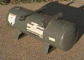 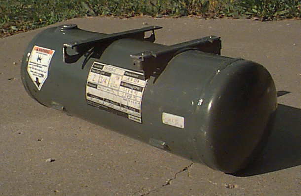
{kind=link}
The next trick is tank placement. Some people put the tank inside the vehicle, but then you have to run the air lines through the firewall to reach the compressor. It's also a safety hazard if the tank gets over-pressurized or dented and explodes. In a small vehicle like my YJ, inside space is at a premium, so I didn't want to waste it with a permanently-mounted air tank.
That left three good spots that I could find on my YJ:
- Just behind and to the right (passenger side) of the radiator, in front of the fender well.
- Behind the right fender well, underneath the battery tray.
- Under the body tub, above, in front of, and parallel to the rear axle.
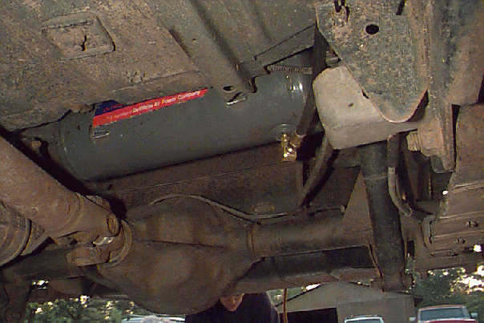 Each spot is a different shape. The best choice depends on the shape of your tank and the amount of other stuff in your engine compartment. I chose to mount my tank by the rear axle. The maximum diameter of a tank in this position is 6" if you want to avoid hitting it with your pinion yoke.
When mounting your tank, it's important to have an outlet at the lowest point on the tank so you can drain moisture from it periodically. Regardless of what filters you have on the line, unless you live in a zero-humidity environment, water will condense on the inside of the tank when it depressurizes. 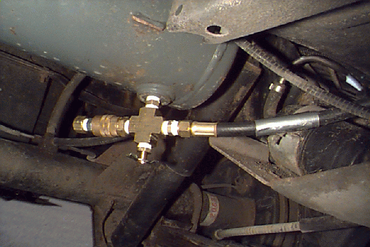 When I mounted my tank, I used a single hole on the bottom "side" of the tank for both input and output. I simply used a four-way cross connector that had the top connected to the bottom of the tank, the hose to the compressor coming out one side of the cross, a drain plug on the bottom of the cross, and a quick-disconnect fitting on the other side. The quick disconnect is a bit more difficult to reach than I'd originally envisioned, so I may drill a hole in my tub and move it inside the cab someday. To keep the inside of the quick disconnect clean, I capped off a male disconnect fitting and kept it plugged into the female end when not in use. I zip-tied the hose to the brake and fuel lines running along the inside of the frame rail and up into the engine compartment. The hose then ran along a lip on the bottom of the firewall just above the bell housing (I drilled a hole in this ledge and zip-tied the hose to it to ensure it wouldn't fall off and lie on anything hot. I coiled the extra foot or two of hose up under the battery tray, and then ran the end of it under the alternator to the front of the passenger fender well where the rest of the air fittings were located. This requires about 12' of hose; I picked up 15' of 1/4" hose for $7 from the local surplus center.
The Compressor¶
Identification¶
Most A/C compressors lubricate themselves with the freon that flows through the A/C system. To use these compressors for pumping air, you need to have an external oiler feeding oil into the intake hose and a filter to remove the oil from the output hose. Certain York-style compressors (the big, boxy, vertical kind) used an internal oil reservoir for lubrication, which makes them ideal for use as stand-alone air compressors. These compressors were commonly used on AMCs, Fords, and (I hear) Volvos in the '70's and early '80's.
Therold Enterprises makes mounting brackets and alternator pulleys to mount an AMC York onto a current Jeep 4- or 6-cyl engine. The guy I talked to was extremely friendly and knowledgeable about the differences in the various kinds of York compressors. He outlined three major differences in the various types: hose connectors, pulley clearance, and piston stroke length.
Unless you have gobs of vertical hood clearance, you really want to get the AMC-style hose connectors, which run horizontally across the top of the compressor. The Ford-style connectors stick vertically out of the top of the compressors and then bend over to connect with the A/C hoses, which adds about 3" to the total height of the unit. The good news is that these connectors are just screwed into the top of the compressor, and the two connector styles are interchangeable on the same compressor. The bad news is that the screw threads on the connectors are closer together than those on most 3/4" pipe fittings, so it's nearly impossible to find connectors anywhere but on another York compressor. At left is a photo of my Ford-style compressor. The photo shows one Ford-style hose connector and one AMC-style connector so you can see the difference.
Another difference between the AMC and Ford versions is the pulley. The AMC pulley is positioned very close (1/2") to the body of the compressor. The Ford pulley sticks out about two inches away from the body. This might make a difference in your mounting bracket because the belt obviously needs to line up evenly with the pulley on the other end.
The third difference is in the stroke length. There are reportedly three different stroke lengths, ranging from less than 7" to over 10". The longer the stroke, the more air the compressor can pump per minute. This doesn't vary by automaker, so there are two ways to tell which length you've got:
- If your compressor still has a metal York (not Motorcraft) ID tag bolted to the front of it, there will be a number on the tag that looks like "F2 XXY ", where: XX | Stroke length ---|--- | 10 = long | 09 = medium | 07 = short Y | Discharge Direction | L = left | R = right
- Take off the clutch and look at the crankshaft.
- Remove the center bolt (1/2" socket)
- Remove the large washer
- Run a 5/8" coarse thread bolt in until it forces the clutch off
- Look at the end of the crankshaft. The end is flat on all models.
- If the edge of the flat end is beveled, you've got the short stroke.
- If it's a sharp corner, but with a thin groove for a retaining clip, you've got the medium stroke.
- If it's a sharp corner without any groove, you've got the long stroke.
Acquisition¶
I've seen junkyard prices for old Yorks ranging from $12.50 to over $50. I had to pay $30 for my Ford model off a late-70's Fairmont, then shelled out another $20 to get AMC hose connectors and an idler pulley off an AMC Eagle at a different yard. If you can, have the yard personnel remove the compressor for you, since the placement of the mounting bolts makes removing it from the vehicle yourself a real PITA. When getting the hose connectors, try to grab a length of hose along with the weird connector. This will make it easier to connect it to your own custom setup later.
Before you lay down your green, make sure the compressor works. To check whether it pumps air, plug the outlet hose with your thumb and then turn the inner portion of the clutch pulley several full revolutions. If, upon removing your thumb, you can feel the pressure difference, then it passed the test. Ideally, there should be no oil pumped out the hose, but a simple inline filter will fix that problem if it exists. The second test is whether the electric clutch works. The clutch is what locks the outer portion of the pulley where the belt runs to the inner portion of the pulley that's connected to the crankshaft. To check this, ground the compressor case on your vehicle. Then take the single wire that should be attached to the compressor and touch it to your positive battery terminal. You should hear a click as the clutch engages, and turning the outer portion of the pulley should then force the inner section to turn and pump air. When current is removed, the clutch should disengage, and the outer portion of the pulley should spin freely without moving the inner portion.
Mounting¶
To hold oil, the compressor must be mounted vertically. The oil check/fill hole on my York is about halfway up the left (as you're facing the pulley) side of the compressor. Remove the bolt, then put a 90-degree bend in a section of metal coat hanger. Make sure it's long enough so that the end of the wire touches the bottom of the oil sump. I've seen oil level recommendations ranging from 1" to halfway up the dipstick. The type of oil used isn't critical--regular old 10W-30 will work fine. A trigger-type oil squirter can seems to be the best way to add oil when necessary.
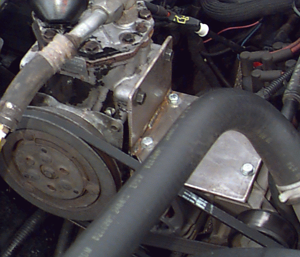 Mounting the York to an old Jeep with a 258 ci inline-6 should be pretty easy, since this compressor was available from the factory. Just grab the OEM brackets from another 258 with A/C and you're good to go. Mounting it on any other engine requires fabrication of a custom mounting bracket. Complete mounting brackets for newer Jeep engines are available for $200+ from Therold Enterprises. If that's too steep for you, they'll sell you just the backplate for the compressor, with slots drilled for adjustable mounting bolts, for $12. If you're the do-it-yourself type, you could also fabricate your own design. Craig Myers has a good design for mounting to his '93 YJ 4-cyl that I believe is similar to what Therold sells. I ended up with (essentially) two 6x6x3/16" steel plates welded together to form a T. A diagram with mounting hole measurements is on page 1. Measurements of the alternator bracket, compressor, and pulleys without the compressor bracket is on page 2.
{kind=link}
{kind=link}
{kind=link}
If your engine uses newer serpentine belts, you must somehow rig up a v-belt pulley to power the compressor's v-belt pulley. Therold sells a new alternator pulley for newer Jeeps that has both serpentine and v-belt grooves. This seems to be the route most people take, but their $40 price tag was a bit steep for me. I wandered around a junkyard until I found a pulley that would fit between my water pump pulley and the fan mount. I got one for $5 (I think it was from an '80-ish Chevy Caprice -- I forget exactly) that had 3 screw holes (my Jeep has four) and a 7/8" center shaft hole (my Jeep's was 5/8"). I took it to a local machinist who charged me $15 to narrow the center hole with a washer and drill a 4-hole bolt pattern to match that of my Jeep. I considered doing it myself, but a pulley spinning at 4K rpm will cause nasty vibrations and eventually tear up your water pump if it's not perfectly centered. My route was a bit more work, but I saved $20. The result required a 49.5" v-belt. The center of the belt has at least an inch of play when I push hard, which is more than I'd like, but a 49" belt just wasn't long enough. An idler pulley may be in order if belt slippage becomes a problem.
The first picture below shows the pulley as it came off the donor vehicle. The second picture shows the modifications that the machinist made to allow mounting to my YJ. The third photo shows it mounted in place. 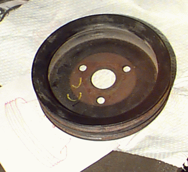 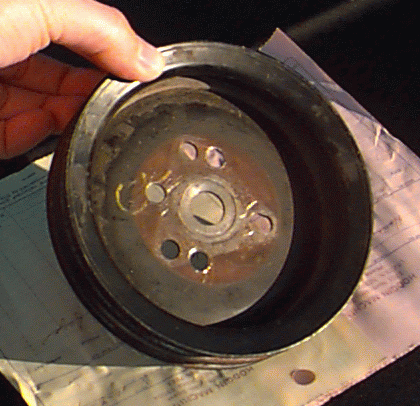 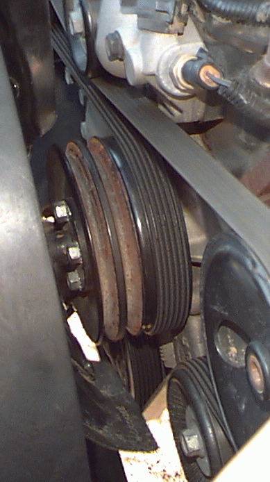
If I were doing it again, I might just buy the stuff from Therold rather than fabbing it myself. Their way uses a $40 pulley plus a $12 plate that allows the compressor to adjust itself vertically, guaranteeing a tight belt ($52 total). My set cost $20 for the re-machined pulley plus $40 for the bracket (got screwed there--he quoted me $25 initially). This cost $60 total, and I may have to add a sturdy, adjustable idler pulley to my compressor bracket if the belt turns out to be too loose.
Air Fittings¶
I chose to mount the hose connectors and stuff on the inside of my front right wheel well near the factory jack. That location provides easy access and also keeps everything above the water line should I decide to ford any rivers. 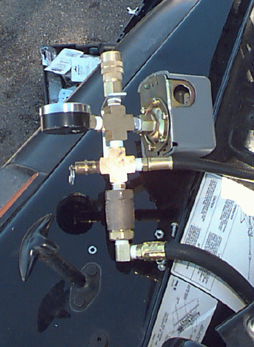 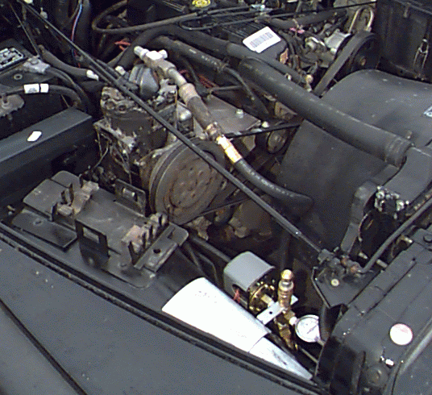 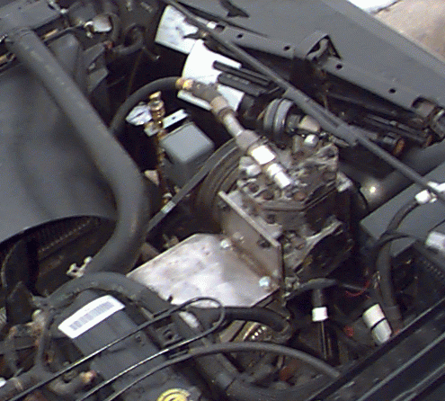 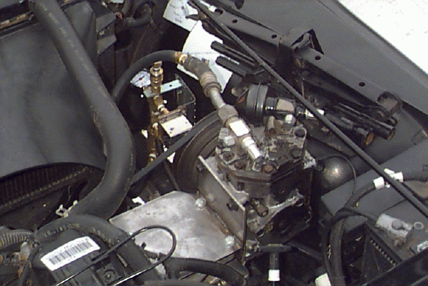
The input hose on the York compressor needs to run to an air filter. I used a $4 crankcase filter (Fram part BA3631) that looked like it would match up well to my intake hose. A foot or so of electrical tape fastened it to the metal part of the intake hose connector.
If your compressor leaks any oil out through the output hose, you'll want to install an inline air filter between the compressor and the rest of the system. This should trap any oil, water, or anything else that you don't want getting blown into your tank, tires, or tools. It doesn't look like my compressor has this problem, so I opted to save $20 and skip the filter.
The output hose from the York (or the filter, if so equipped) needs to run to a check valve that prevents air from the rest of the system from flowing back into the compressor. If this were allowed to happen, the compressor would have to work much harder to start up initially.
On the system side of the check valve, I installed a pressure switch. This switch turns the compressor's clutch on when the pressure in the system drops to a certain level, and turns it off again when the pressure climbs to a certain level. Many pressure switches have preset on and off levels, but I found one at a surplus center for $17 that has variable settings I can adjust myself. The difference between on and off is present to about 15-20 psi. I adjusted the turn on pressure to about 90-95 psi for now, putting the shut off pressure at just under 110 psi. If you're using this compressor to power your ARB air lockers, you must keep the pressure between 80 and 105 psi.
Next to the pressure switch, I installed a 160 psi pressure gauge. Make sure you mount this such that it will be easily visible in less than optimal lighting without sticking your head down into a running engine. Mine ended up just rearward of the right headlight, lying sideways and facing straight up.
Somewhere around here needs to be a pop-off safety valve rated the same as your wimpiest piece of hardware. In my case, the 125 psi tank was the limiting factor. If the pressure reaches a certain level, this valve will pop open to release the extra pressure before something more critical explodes.
The last piece was a 1/4" NPT quick-disconnect fitting to which I can attach the air hose of my choosing. I picked up a 25' long 1/4" rubber air hose at the local surplus center for $7. (The spring-coiled hoses just don't stretch far enough to reach all four tires.) One end of the hose needs a male fitting for the quick disconnect, and the other end needs a female end. Remember to get an air chuck to attach the hose to your tire stems. If you tend to splash water, mud, or other crud around your engine compartment (or near the rear axle, where I mounted a second quick disconnect), then you'll want to keep that stuff out of your air fittings. I got two mail quick disconnect fittings and capped them off to use as plugs in the female fittings when I'm not using the air system for more important things.
This whole mess is attached to my fender well with an angle bracket and a couple bolts.
Electrical Connections¶
In addition to the pressure switch, you should also have a main switch somewhere in the battery / pressure switch / clutch circuit so that your battery doesn't go dead if your tank gets low while the engine isn't running. A lighted switch run through the firewall to your dashboard is probably a good idea.
I used a big, lighted SPST rocker switch screwed to an angle bracket on the bottom of my dash (just under the climate control levers). Being lighted, it is straightforward to see at a glance whether it's on or off, but at night, that bright red light is quite blinding. I recommend getting a smallish switch whose glow won't ward off oncoming aircraft.
The wire ran from the upper-left-most accessory plug in my under-dash fuse block to the rocker switch. I used an accessory plug so that the circuit would be switched by the ignition key; there's obviously no point in engaging the compressor clutch if the fan belts aren't turning. It then ran from the switch through the rubber grommet above the accelerator through which all the other dash wires run into the engine compartment. Use a small knife to cut the smallest slit possible in the rubber grommet that will still allow your wire to pass through. The wire then ran along the front of the firewall to the passenger side fender well and then up to the pressure switch. The last leg runs from the pressure switch to the positive wire running out of the compressor.
Shopping list¶
The actual list of supplies required will vary from one rig to another, but this is what I used and what it cost me.
Item | Cost | Compressor and Tank¶
York A/C compressor from Ford Fairmont | $35.00 AMC-style hose connectors for York | $12.00 Custom mounting bracket for compressor parts and labor | $40.33 V-belt water pump pulley from Chevy Caprice, machined to fit '95 YJ | $20.00 49.5" V-belt | $6.99 Fram BA3631 crankcase air filter | $3.69 2-gal used air tank, 150 psi pop-off valve, 1/4" NPT female quick disconnect, 1/4" NPT nipple, 1/4" NPT four-way cross manifold | $30.00 Subtotal | $148.01 Air Fittings 15' of 1/4" rubber air hose, 1/4" NPT fittings | $6.75 24" of 3/8" rubber air hose, 1/4" NPT fittings | $8.99 25' x 1/4" spring-coil air hose, 1/4" NPT fittings | $6.99 1/4" NPT check valve | $12.95 Square D Pumptrol Adjustable Pressure Switch, Class 9013 Type FHG12J27 (1/8" NPT fitting) | $16.95 160 psi pressure gauge (1/4" NPT fitting) | $4.69 Air fitting combo kit (air chuck, blower and fittings, tire pressure gauge, two hex nipples, female quick-disconnect fitting, six male quick-disconnect fittings (two female-threaded, four male-threaded) | $12.47 Quick disconnect coupler (male and female ends) | $4.49 1/4" NPT needle drain cock | $1.85 Two 1/4" NPT four-way cross manifolds | $8.50 1/4" NPT street elbow | $1.79 Two 1/4" NPT hex nipples | $1.50 1/4" NPT male to 1/8" NPT female hex bushing | $0.73 1/4" male NPT to 1/2" hose barb | $1.49 1/4" NPT square-head plug | $0.25 Two 1/4" NPT female pipe caps | $2.70 Subtotal | $93.09 Mounting Hardware 1.5x1.5" metal corner brace | $0.53 3x1" metal corner brace | $0.49 6-32 machine screws (12 pack) | $0.59 6-32 machine screws lock nuts (12 pack) | $0.59 8" zip-ties | $1.69 Four each: 1/4" washers and lock washers | $0.24 Four 8M 1.25x20 bolts | $2.18 Four 8M washers | $1.09 Subtotal | $7.40 Electrical Stuff Lighted 30A SPST rocker switch | $2.29 15' (or so) of insulated 14-18 AWG wire | already had Miscellaneous electrical connectors bought in bulk | nil Subtotal | $2.29 Total | $250.81